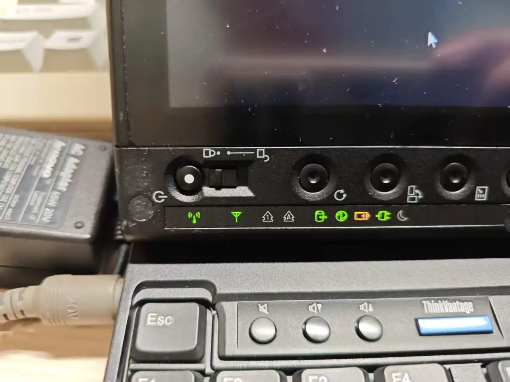
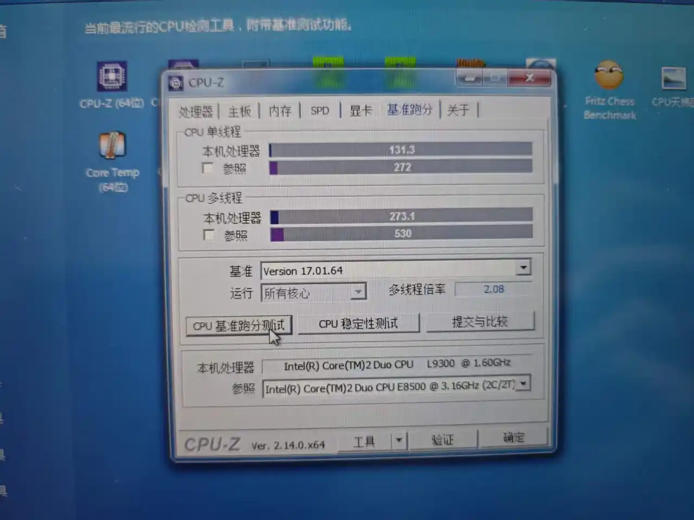

缘起
曾经 200 元收过一台 ThinkPad X61 Tablet，个人用下来，除了触控体验，以及更好的屏幕，其他方面都全面不如 X60（指性能上，标压和低压还是差别太大了）。故后来以 300 的价格卖出。
虽然赚点小钱很开心，但是自那以后，就对这类机器念念不忘。后来 X60 被自己升级网卡的过程中，弄坏了主板，只能依依不舍地出掉了。虽然依旧小赚一笔，但是，那可是贴着 IBM ThinkPad 标志的 X60 啊！作为最后一代贴有 IBM 标志的 ThinkPad 还是相当有纪念意义的。（不经意间开了两个坑呢）
于是，咸鱼上看到了 218 元的 X200t，也是毫不犹豫下单了。虽然也有很多卖 235 的，但是那些都不带内存硬盘，相对来说，没有这台划算。（要知道很多人 X200 都敢卖 200 多）
购买时的小插曲
首先，卖家绝对不懂电脑。图片里只是系统坏了而已，真不至于当坏的出。而且拍的 BIOS 界面也不懂，使用豆包解析，然后贴到图片里的。
后来经过聊天，卖家表示这是他孙子的电脑，孙子考上大学，给他买了新电脑。重装系统问了电脑店，需要 100 元（什么电脑店，这么贵，不就几分钟的事嘛），觉得不划算，就把他之前的旧电脑卖了。
这么说我还是有点同情他孙子的呢，这种机器一般是收藏的，不是日用的啊！估计他回家后直接天塌了。处于良心，还是问了老人有没有经过他孙子同意，结果人家表示没关系，那我就下单了啦~
不过这个老人不会改价格，也不会弄邮费之类的，教了好几回都不会。发货的时候还是咸鱼默认，最后快递员说不能发电脑（这个理解，我第一次卖电脑也踩过这个坑）。最后摆烂，多交了 20 的邮费。（但是，就算是顺丰，你邮费是怎么给我干到 48 的？我发京东都没这么贵）
不过东西还是很全的，电脑 + 适配器 + 触控笔 + 鼠标，还是挺有诚意的，一般就个人卖家会给这么全。
特别是那个联想原装的鼠标，虽然也就二十几块钱的东西，但对我来说也是挺有用的。别看我电脑多，能用的鼠标没几个，很多旧机器还在沿用 2000 年的罗技低端鼠标，还有很多鼠标有双击问题，现在用的几个无线鼠标有很严重的信号干扰问题。这个刚好填补了我有线鼠标上的空白。
原机主的遗产
毕竟是故障机，里边的数据也没有清空。上边有一些学习资料吧（正经的不正经的都有）。现在庆幸还好被当成故障机卖掉了，但凡他爷爷做个数据恢复，翻一下文件夹，这不得社死？
还有不少 360 浏览器之类的软件，总觉得似乎也不像是很懂电脑的样子。
外观
整体非常干净，收了这么多旧电脑头一次见到这么发亮的电脑，前主人绝对是很爱护的。
基本上延续了 Classic ThinkPad 的设计，不过和 X61t 一样，没有顶部键盘灯。

真的，每次都会被 ThinkPad 的这种灯条硬控我好久。真的，同样是廉价 LED 灯条，ThinkPad 的质感就不一样，不知道是不是心理作用。虽然塑料 + 亚克力面板的薄膜还是不如 IBM 时期的玻璃镜面，但胜在灯多啊！如果是支持蓝牙的版本还有一个蓝牙的灯，看着十个指示灯闪烁真的很漂亮！
配置
简单谈一下硬件吧，不过这种机器，谈性能意义不大。
CPU & GPU
Core 2 L 9300 1.60GHz，并非 L9400 1.86GHz 顶配。两者缓存、工艺等方面都差不多，也就主频有区别。不过，这个主频差得还是不少的呢，两者在跑分上还是有一些差距的。

看了下其他人的跑分，L9400 单核 160 多，多核大概 300 出头。
至于 GPU，相对于 X60 的 GMA X3100，GMA 4500MHD 实际上个人感觉提升不大。最主要的区别是支持 DX10，但也只是“能跑”的水平。
理论上来说，DDR3 相对于 DDR2 的内存带宽提升吧？然后一看，X200t 只支持 1066MHz 频率的内存（更高的条子会自动降频），连 1333MHz 都跑不到，是我见过频率最低的 DDR3 机器。要知道用 DDR2 的 X61 内存带宽也有 667MHz。这点提升放在现在看影响不大。
总之，我拿 X61 跑着比较卡的游戏，在 X200t 上依旧不算流畅。
不过，话是这么说，对于东方 Project，特别是后续需要 DX10 的作品，相对 X60 还是有明显提升的，至少我打 L 不会掉帧。另外，对于 H.264 视频的解码也好于 X61，看高码率的 1080p 视频也不会有明显卡顿。
内存
实际上上边说得基本差不多了呢。原装是 2 * 2 的条子，说实在，2GB 在如今内存暴涨的行情，价格依旧下水道、不过升级 4 * 2 似乎意义不大，个人暂时没有升级的意向。
硬盘
自带 500G 日立硬盘，使用时长 1000 小时都不到，也搞不清楚到底是自用的还是清零盘，不过看着还行。
5400RPM，也算那个年代的标准转速。虽然手上有一块 128G 的杂牌 SATA 固态，不过想想反正装的 Windows 7，无所谓了。（有前车之鉴，不敢转 Windows10，这类特种机器很依赖特殊驱动，而这些特殊驱动在 Windows10 下很可能无法工作）
依旧是拧下一个螺丝即可更换的硬盘，这一点我非常喜欢，准备日后用杂牌 SATA 装个 Windows10。改天需要换系统直接换硬盘就可以了。也可以考虑 Ubuntu，之前用 X61t 装过，驱动支持相当完美，不过因为 CPU 缺少指令集有些软件装不了。
网卡
支持 3G LTE 上网，不过这个功能放现在是彻底没用了，3G 基站现在都没几个了。
原装网卡为 Intel 5100 AGN，放现在肯定是不够看了，连蓝牙都不支持的玩意儿。不过不同于 YOGA 3 11，X200t 虽然也有白名单限制，但是社区有解除白名单限制的 BIOS 刷写软件，如果要更换 AX200 还是很方便的。（给 X200 装 AX200 想想也挺有意思的）
但是之前给 X60 更换网卡的时候烧坏了主板（我也不知道为什么，起初是变成只支持单通道内存，到后来进 BIOS 都成问题），给我整出 PTSD 了，加上手上有 AX300 的 USB 无线网卡，也不是不能用，暂时没有更换的想法。
屏幕 & 触控
1280 * 800，TN 屏，但是有 LED 背光，亮度没有明显衰减。虽然分辨率不怎么样，但怎么说也是 16:10，观感上还能接受。
之前用 X61t 的时候，那块电磁屏还是与边框有一点凹陷的（实际上你看现在大部分笔记本屏幕距离边框都有一定凹陷），但是我这一台竟然是纯平的？！虽然现在的平板纯平也是常识，但是在 2010 年还是很少见的啊。（实际上很多 X200t 的版本也不是纯平的，我这算是运气好）而且这块屏幕很有意思，表面的磨砂玻璃与内屏之间还相隔了好几毫米，一个 LCD 屏幕硬是给我整出了像是 CRT 那种表面覆盖一块几厘米玻璃的感觉，非常有意思。在质感上可谓独一无二。
作为触摸屏，当然是要好好体验的啦！
安装的全补丁版的 Windows7，各类相关软件啊、支持啊基本上不会出问题。实际上，单纯就书写体验来说，这块仅支持单点笔触的电磁屏，实际上性能是不输很多廉价数位板的。由于不支持手触，所以可以肆无忌惮把手搭在屏幕上，根本不用担心误触好吧！如果你要问，那么缩放，移动之类的操作怎么办呢——那不是还有手感超好的七行键盘嘛！完美！
不过有一点还是要吐槽：屏幕的按键面板取消了 X61t 的方向键，没有之前那么方便了，算是个退化。
对了，还有一点不得不提，就是它那猎奇的自动旋转。作为早期的 Windows Tablet 产品，它当然是不直接陀螺仪判断位置的（不过把这么厚的本子竖起来也不现实），而是使用了个 Active Route 功能（没错，就是这么个功能也要起一个高大上的名字，ThinkPad 的逼格就是这么来的呢）。使用前需要矫正，就是拿着这个笔记本转来转去，估计通过转轴判断的位置吧？不过实际效果不如直接按面板上的旋转键来得方便。
电池
之前我收 X61t 的时候，那个电池就只能撑 10 分钟，不过这已经很好了，大部分这类机子的电池都饿死了。我这台 X200t 也不例外，充不进去电。这类机器的电池似乎有钱都买不到，咸鱼上根本没有相关链接。要整只能自己手搓。但是 X200t 的电池又不像 X200 那样简单粗暴整几根电芯就行。而且，由于 ThinkPad 超级高的安全保护系数，一旦电池有任何挪动和异常，就会立刻断开保险，且芯片上也会有记录，机器插上基本上是用不了的。问了 AI，只能带电操作，或者整编程器给芯片刷写数据。电芯焊接方面，用电烙铁似乎会直接爆炸，最好用电焊机。还好查了 AI，不然我可能真就直接买几节电芯，拆开更换，然后直接上电烙铁了。捡回一条命。
虽然卖家送了适配器，不过，X200t 和 X61t 的适配器是通用的，似乎也不是刚需。
总之，这台机子的定位越来越像“固定工作台上的数位板”了。
扬声器
这个想想还是单独说一下。之前用 X60 和 X61t 的时候，都是非常雷人的单扬声器，而且还放在一角，听上去就只能听个响。在 X200t 上看到大尺寸的双扬声器还是非常以外的。别的不说，声音是真的大，开机自检那一声“滴”是真的吓着我了。在我用过的笔记本里属于非常有力气的哪一类。
键盘
久仰 X200、X201、X220 这一系列机器的七行键盘的大名。如今用起来果然不错。从 X60 的 4:3 的屏幕比例挣脱出来之后，键盘布局更加宽敞，手感也更好，和之前用的宽屏版的 T61 差不多。（不经意间又开了个坑）
接口
接口如下，个人觉得和 X61t 除了接口布局完全一致。
- USB 2.0 * 3
- 3.5mm 耳麦插孔 * 2
- SD 读卡器
- VGA 接口
- 网线接口
- 电话线接口（很意外，2010 年了依旧保留了 Modem ）
- 触控笔插槽
当然，如果要拓展的话，可以使出 ThinkPad 的传统配件——拓展坞！接口上肯定是不用担心的。
未来方向
可能考虑买一个拓展坞？也不贵，不过一想到从 X200 开始，拓展坞的光驱就从 IDE 改为了 SATA，读盘性能没有之前那么稳定了，所以拓展坞对于我的吸引力就大大下降了。真是越来越怀念我那台 X60 了，他的拓展坞自带索尼光驱，读盘、刻录都非常稳定，可惜在 X60 废掉之后也一并卖了。
如果可以，或许还可以破解白名单，升级网卡，把内存升级到 8g，好像也就这样了。